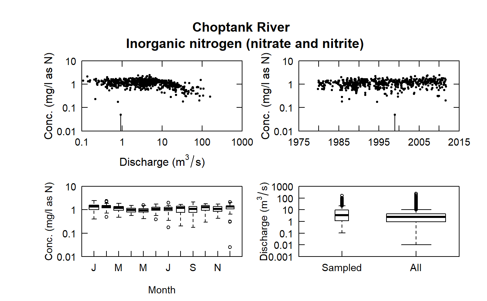
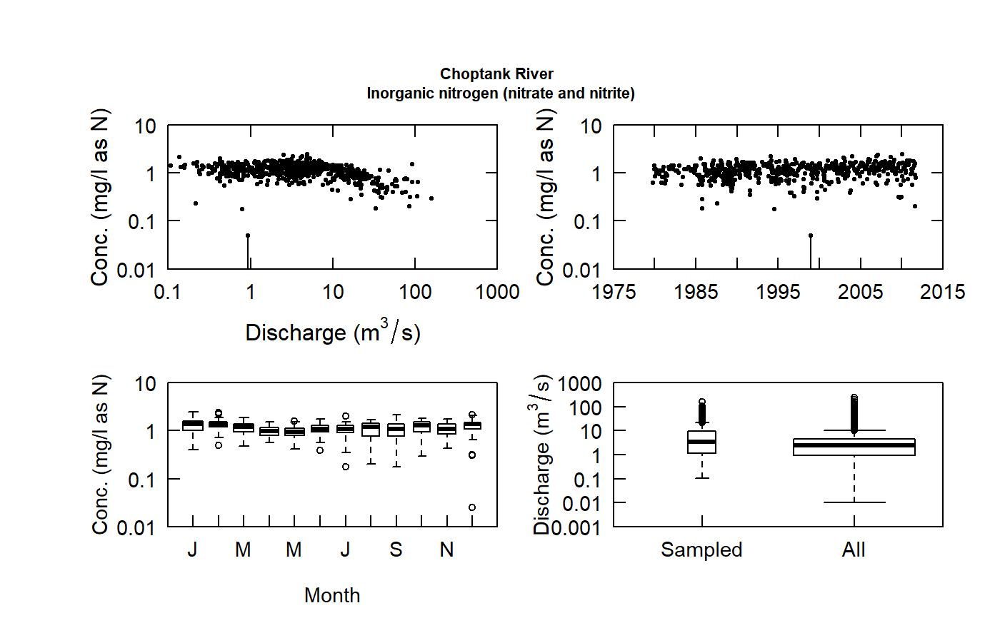

A small collection of helper functions
# S3 method for egret print(x, ...) # S3 method for egret plot(x, ...) nDischarge(x) nObservations(x) nCensoredVals(x)
| x | EGRET object |
|---|---|
| … | additional parameters |
Choptank_eList#> Daily discharge: #> Date Q #> 1 1979-10-01 1.897229 #> ... #> Date Q #> 11688 2011-09-30 9.457827 #> #> Sample data: #> Date ConcLow ConcHigh Q #> 1 1979-10-24 0.62 0.62 3.199804 #> ... #> Date ConcLow ConcHigh Q #> 606 2011-09-29 0.8 0.8 13.90357 #> #> Choptank River:Inorganic nitrogen (nitrate and nitrite) #> Parameter units: mg/l as N #> Drainage area: 292.6687 km^2print(Arkansas_eList)#> Daily discharge: #> Date Q #> 9132 1989-10-01 37600 #> ... #> Date Q #> 17532 2012-09-30 2210 #> #> Sample data: #> Date Q ConcLow ConcHigh #> 1 1990-09-18 1730 NA 0.05 #> ... #> Date Q ConcLow ConcHigh #> 254 2012-09-25 1030 0.043 0.043 #> #> Arkansas River at Murray Lock and Dam (Lock and Dam No. 7):Ammonia #> Parameter units: mg/l as N #> Drainage area: 395783.7 km^2plot(Choptank_eList)plot(Choptank_eList, cex.main=0.7)nDischarge(Arkansas_eList)#> [1] 8401nObservations(Arkansas_eList)#> [1] 254nCensoredVals(Arkansas_eList)#> [1] 115